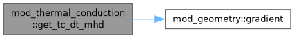
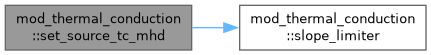
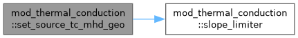
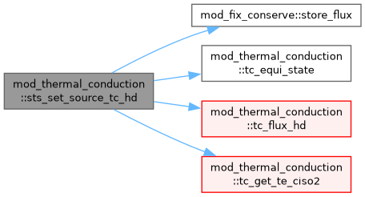
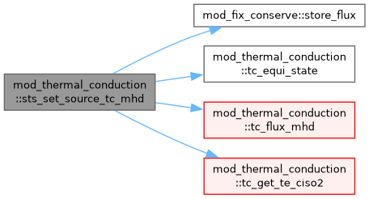
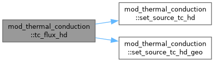
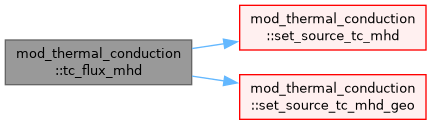
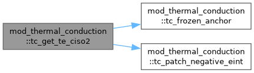

Thermal conduction for HD and MHD or RHD and RMHD or twofl (plasma-neutral) module Adaptation of mod_thermal_conduction for the mod_supertimestepping. More...
Data Types | |
| interface | get_var_subr |
| interface | get_tciso2_subr |
| temperature from the energy variable and, if present, ciso2 = p/rho More... | |
| interface | get_2var_subr |
| interface | eos_scalar2_func |
| Scalar EoS inverse, e.g. eint_nH_from_T(log_nH, log_T). More... | |
| type | tc_fluid |
| type | tc_anchor_t |
| Per-block anchor of the frozen-ionisation conduction step: T, R and the internal energy at the step start, and the inverse frozen-composition heat capacity per volume. More... | |
Functions/Subroutines | |
| subroutine | tc_init_params (phys_gamma) |
| subroutine, public | tc_get_mhd_params (fl, read_mhd_params) |
| Init TC coefficients: MHD case. | |
| subroutine, public | tc_get_hd_params (fl, read_hd_params) |
| Init TC coefficients: HD case. | |
| double precision function, public | get_tc_dt_mhd (w, ixil, ixol, dxd, x, fl) |
| Get the explicit timestep for the TC (mhd implementation) Note: for multi-D MHD (1D MHD will use HD fall-back). | |
| subroutine, public | sts_set_source_tc_mhd (ixil, ixol, w, x, wres, fix_conserve_at_step, my_dt, igrid, nflux, fl) |
| anisotropic thermal conduction with slope limited symmetric scheme Sharma 2007 Journal of Computational Physics 227, 123 | |
| subroutine | set_source_tc_mhd (ixil, ixol, w, x, fl, qvec, rho, te, ciso2, alpha) |
| subroutine | set_source_tc_mhd_geo (ixil, ixol, w, x, fl, qvec, rho, te, ciso2, alpha) |
| double precision function, dimension(ixi^s) | slope_limiter (f, ixil, ixol, idims, pm, tc_slope_limiter) |
| double precision function, public | get_tc_dt_hd (w, ixil, ixol, dxd, x, fl) |
| Get the explicit timestep for the TC (hd implementation) Note: also used in 1D MHD (or for neutrals in twofl). | |
| subroutine | tc_get_te_ciso2 (ixil, w, x, fl, igrid, te, ciso2) |
| Te over the block (+ghosts) and ciso2 = p/rho for the saturation limit: the frozen- ionisation map within a conduction step with frozen_ion, else the full EoS with the optional negative-eint repair (ciso2 = Te where R = 1 or without saturation). | |
| subroutine | tc_frozen_anchor (ixil, w, x, fl, igrid) |
| Anchor of the frozen-ionisation conduction step for block igrid, on the step-start state (internal energy in w(:,e_)): T and R = ciso2/T from the full EoS, the energy, and the inverse frozen-composition heat capacity. Within the step T = T0 + (e - e0)/(R0 rho/(gamma-1)), exact where the gas is fully ionised or neutral. | |
| subroutine | tc_equi_state (ixil, w, x, fl, te, rho, ciso2) |
| Background Te and rho for the equilibrium flux. ciso2 keeps R = ciso2/Te of the full state. | |
| subroutine | tc_flux_hd (ixil, ixol, w, x, fl, qvec, rho, te, ciso2) |
| Face fluxes for the HD STS source, uniform or general geometry. | |
| subroutine | tc_flux_mhd (ixil, ixol, w, x, fl, qvec, rho, te, ciso2, alpha) |
| Face fluxes for the MHD STS source, uniform or general geometry. | |
| subroutine, public | sts_set_source_tc_hd (ixil, ixol, w, x, wres, fix_conserve_at_step, my_dt, igrid, nflux, fl) |
| subroutine | set_source_tc_hd (ixil, ixol, w, x, fl, qvec, rho, te, ciso2) |
| subroutine | set_source_tc_hd_geo (ixil, ixol, w, x, fl, qvec, rho, te, ciso2) |
| subroutine, public | tc_patch_negative_eint (w, x, ixil, ixol, te, ie, fl, patched) |
| Patch cells where e_int <= 0 by neighbor-averaging the temperature AND repairing the conserved internal energy w(:, ie) in place. Called after get_temperature_from_eint in the TC source routines when tc_patch_eint is .true. During STS RKL2 Chebyshev substeps the polynomial can overshoot e_int to negative values at low-density coronal cells. A negative T would produce NaN via sqrt(T) in the Spitzer conductivity. This routine replaces those cells' T with the average of valid (e_int > 0) neighbors and writes the matching e_int back to w(ix, ie) via the EoS inverse helper eint_nH_from_T, so the next STS substep does not re-read negative w and amplify it. | |
Variables | |
| double precision | tc_gamma_1 |
| The adiabatic index. | |
| type(tc_anchor_t), dimension(:), allocatable | tc_anchor |
Detailed Description
Thermal conduction for HD and MHD or RHD and RMHD or twofl (plasma-neutral) module Adaptation of mod_thermal_conduction for the mod_supertimestepping.
The TC is set by calling tc_init_params()
Organized such that it can call either isotropic (HD) or anisotropic (MHD) variants it adds a heat conduction source to each energy equation and can be recycled within a multi-fluid context (such as plasma-neutral twofl module)
10.07.2011 developed by Chun Xia and Rony Keppens 01.09.2012 moved to modules folder by Oliver Porth 13.10.2013 optimized further by Chun Xia 12.03.2014 implemented RKL2 super timestepping scheme to reduce iterations and improve stability and accuracy up to second order in time by Chun Xia. 23.08.2014 implemented saturation and perpendicular TC by Chun Xia 12.01.2017 modulized by Chun Xia adapted by Beatrice Popescu to twofluid settings 06.09.2024 cleaned up for use in rhd and rmhd modules (Nishant Narechania and Rony Keppens) 30.11.2025 Minor cleanup (for consistency between hd and mhd)
PURPOSE: IN MHD ADD THE HEAT CONDUCTION SOURCE TO THE ENERGY EQUATION S=DIV(KAPPA_i,j . GRAD_j T) where KAPPA_i,j = tc_k_para b_i b_j + tc_k_perp (I - b_i b_j) b_i b_j = B_i B_j / B**2, I is the unit matrix, and i, j= 1, 2, 3 for 3D IN HD ADD THE HEAT CONDUCTION SOURCE TO THE ENERGY EQUATION S=DIV(tc_k_para . GRAD T) USAGE:
- in mod_usr.t -> subroutine usr_init(), add unit_length=your length unit unit_numberdensity=your number density unit unit_velocity=your velocity unit unit_temperature=your temperature unit before call (m)hd_activate()
- to switch on thermal conduction in the (r)(m)hd_list of amrvac.par add: (r)(m)hd_thermal_conduction=.true.
- in the tc_list of amrvac.par : tc_perpendicular=.true. ! (default .false.) turn on thermal conduction perpendicular to magnetic field tc_saturate=.true. ! (default .false. ) turn on thermal conduction saturate effect tc_slope_limiter='MC' ! choose limiter for slope-limited anisotropic thermal conduction in MHD note: twofl_list incorporates instances for charges and neutrals
Function/Subroutine Documentation
◆ get_tc_dt_hd()
| double precision function, public mod_thermal_conduction::get_tc_dt_hd | ( | double precision, dimension(ixi^s,1:nw), intent(in) | w, |
| integer, intent(in) | ixi, | ||
| integer, intent(in) | l, | ||
| integer, intent(in) | ixo, | ||
| l, | |||
| double precision, intent(in) | dx, | ||
| double precision, intent(in) | d, | ||
| double precision, dimension(ixi^s,1:ndim), intent(in) | x, | ||
| type(tc_fluid), intent(in) | fl ) |
Get the explicit timestep for the TC (hd implementation) Note: also used in 1D MHD (or for neutrals in twofl).
Definition at line 1425 of file mod_thermal_conduction.t.
◆ get_tc_dt_mhd()
| double precision function, public mod_thermal_conduction::get_tc_dt_mhd | ( | double precision, dimension(ixi^s,1:nw), intent(in) | w, |
| integer, intent(in) | ixi, | ||
| integer, intent(in) | l, | ||
| integer, intent(in) | ixo, | ||
| l, | |||
| double precision, intent(in) | dx, | ||
| integer, intent(in) | d, | ||
| double precision, dimension(ixi^s,1:ndim), intent(in) | x, | ||
| type(tc_fluid), intent(in) | fl ) |
Get the explicit timestep for the TC (mhd implementation) Note: for multi-D MHD (1D MHD will use HD fall-back).
Definition at line 258 of file mod_thermal_conduction.t.

◆ set_source_tc_hd()
| subroutine mod_thermal_conduction::set_source_tc_hd | ( | integer, intent(in) | ixi, |
| integer, intent(in) | l, | ||
| integer, intent(in) | ixo, | ||
| l, | |||
| double precision, dimension(ixi^s,1:nw), intent(in) | w, | ||
| double precision, dimension(ixi^s,1:ndim), intent(in) | x, | ||
| type(tc_fluid), intent(in) | fl, | ||
| double precision, dimension(ixi^s,1:ndim), intent(out) | qvec, | ||
| double precision, dimension(ixi^s), intent(in) | rho, | ||
| double precision, dimension(ixi^s), intent(in) | te, | ||
| double precision, dimension(ixi^s), intent(in) | ciso2 ) |
Definition at line 1681 of file mod_thermal_conduction.t.
◆ set_source_tc_hd_geo()
| subroutine mod_thermal_conduction::set_source_tc_hd_geo | ( | integer, intent(in) | ixi, |
| integer, intent(in) | l, | ||
| integer, intent(in) | ixo, | ||
| l, | |||
| double precision, dimension(ixi^s,1:nw), intent(in) | w, | ||
| double precision, dimension(ixi^s,1:ndim), intent(in) | x, | ||
| type(tc_fluid), intent(in) | fl, | ||
| double precision, dimension(ixi^s,1:ndim), intent(out) | qvec, | ||
| double precision, dimension(ixi^s), intent(in) | rho, | ||
| double precision, dimension(ixi^s), intent(in) | te, | ||
| double precision, dimension(ixi^s), intent(in) | ciso2 ) |
Definition at line 1829 of file mod_thermal_conduction.t.
◆ set_source_tc_mhd()
| subroutine mod_thermal_conduction::set_source_tc_mhd | ( | integer, intent(in) | ixi, |
| integer, intent(in) | l, | ||
| integer, intent(in) | ixo, | ||
| l, | |||
| double precision, dimension(ixi^s,1:nw), intent(in) | w, | ||
| double precision, dimension(ixi^s,1:ndim), intent(in) | x, | ||
| type(tc_fluid), intent(in) | fl, | ||
| double precision, dimension(ixi^s,1:ndim), intent(out) | qvec, | ||
| double precision, dimension(ixi^s), intent(in) | rho, | ||
| double precision, dimension(ixi^s), intent(in) | te, | ||
| double precision, dimension(ixi^s), intent(in) | ciso2, | ||
| double precision, intent(in) | alpha ) |
Definition at line 431 of file mod_thermal_conduction.t.

◆ set_source_tc_mhd_geo()
| subroutine mod_thermal_conduction::set_source_tc_mhd_geo | ( | integer, intent(in) | ixi, |
| integer, intent(in) | l, | ||
| integer, intent(in) | ixo, | ||
| l, | |||
| double precision, dimension(ixi^s,1:nw), intent(in) | w, | ||
| double precision, dimension(ixi^s,1:ndim), intent(in) | x, | ||
| type(tc_fluid), intent(in) | fl, | ||
| double precision, dimension(ixi^s,1:ndim), intent(out) | qvec, | ||
| double precision, dimension(ixi^s), intent(in) | rho, | ||
| double precision, dimension(ixi^s), intent(in) | te, | ||
| double precision, dimension(ixi^s), intent(in) | ciso2, | ||
| double precision, intent(in) | alpha ) |
Definition at line 894 of file mod_thermal_conduction.t.

◆ slope_limiter()
| double precision function, dimension(ixi^s) mod_thermal_conduction::slope_limiter | ( | double precision, dimension(ixi^s), intent(in) | f, |
| integer, intent(in) | ixi, | ||
| integer, intent(in) | l, | ||
| integer, intent(in) | ixo, | ||
| l, | |||
| integer, intent(in) | idims, | ||
| integer, intent(in) | pm, | ||
| integer, intent(in) | tc_slope_limiter ) |
Definition at line 1383 of file mod_thermal_conduction.t.
◆ sts_set_source_tc_hd()
| subroutine, public mod_thermal_conduction::sts_set_source_tc_hd | ( | integer, intent(in) | ixi, |
| integer, intent(in) | l, | ||
| integer, intent(in) | ixo, | ||
| l, | |||
| double precision, dimension(ixi^s,1:nw), intent(inout) | w, | ||
| double precision, dimension(ixi^s,1:ndim), intent(in) | x, | ||
| double precision, dimension(ixi^s,1:nw), intent(inout) | wres, | ||
| logical, intent(in) | fix_conserve_at_step, | ||
| double precision, intent(in) | my_dt, | ||
| integer, intent(in) | igrid, | ||
| integer, intent(in) | nflux, | ||
| type(tc_fluid), intent(in) | fl ) |
Definition at line 1609 of file mod_thermal_conduction.t.

◆ sts_set_source_tc_mhd()
| subroutine, public mod_thermal_conduction::sts_set_source_tc_mhd | ( | integer, intent(in) | ixi, |
| integer, intent(in) | l, | ||
| integer, intent(in) | ixo, | ||
| l, | |||
| double precision, dimension(ixi^s,1:nw), intent(inout) | w, | ||
| double precision, dimension(ixi^s,1:ndim), intent(in) | x, | ||
| double precision, dimension(ixi^s,1:nw), intent(inout) | wres, | ||
| logical, intent(in) | fix_conserve_at_step, | ||
| double precision, intent(in) | my_dt, | ||
| integer, intent(in) | igrid, | ||
| integer, intent(in) | nflux, | ||
| type(tc_fluid), intent(in) | fl ) |
anisotropic thermal conduction with slope limited symmetric scheme Sharma 2007 Journal of Computational Physics 227, 123
Definition at line 350 of file mod_thermal_conduction.t.

◆ tc_equi_state()
| subroutine mod_thermal_conduction::tc_equi_state | ( | integer, intent(in) | ixi, |
| integer, intent(in) | l, | ||
| double precision, dimension(ixi^s,1:nw), intent(in) | w, | ||
| double precision, dimension(ixi^s,1:ndim), intent(in) | x, | ||
| type(tc_fluid), intent(in) | fl, | ||
| double precision, dimension(ixi^s), intent(inout) | te, | ||
| double precision, dimension(ixi^s), intent(inout) | rho, | ||
| double precision, dimension(ixi^s), intent(inout) | ciso2 ) |
Background Te and rho for the equilibrium flux. ciso2 keeps R = ciso2/Te of the full state.
Definition at line 1565 of file mod_thermal_conduction.t.
◆ tc_flux_hd()
| subroutine mod_thermal_conduction::tc_flux_hd | ( | integer, intent(in) | ixi, |
| integer, intent(in) | l, | ||
| integer, intent(in) | ixo, | ||
| l, | |||
| double precision, dimension(ixi^s,1:nw), intent(in) | w, | ||
| double precision, dimension(ixi^s,1:ndim), intent(in) | x, | ||
| type(tc_fluid), intent(in) | fl, | ||
| double precision, dimension(ixi^s,1:ndim), intent(out) | qvec, | ||
| double precision, dimension(ixi^s), intent(in) | rho, | ||
| double precision, dimension(ixi^s), intent(in) | te, | ||
| double precision, dimension(ixi^s), intent(in) | ciso2 ) |
Face fluxes for the HD STS source, uniform or general geometry.
Definition at line 1578 of file mod_thermal_conduction.t.

◆ tc_flux_mhd()
| subroutine mod_thermal_conduction::tc_flux_mhd | ( | integer, intent(in) | ixi, |
| integer, intent(in) | l, | ||
| integer, intent(in) | ixo, | ||
| l, | |||
| double precision, dimension(ixi^s,1:nw), intent(in) | w, | ||
| double precision, dimension(ixi^s,1:ndim), intent(in) | x, | ||
| type(tc_fluid), intent(in) | fl, | ||
| double precision, dimension(ixi^s,1:ndim), intent(out) | qvec, | ||
| double precision, dimension(ixi^s), intent(in) | rho, | ||
| double precision, dimension(ixi^s), intent(in) | te, | ||
| double precision, dimension(ixi^s), intent(in) | ciso2, | ||
| double precision, intent(in) | alpha ) |
Face fluxes for the MHD STS source, uniform or general geometry.
Definition at line 1594 of file mod_thermal_conduction.t.

◆ tc_frozen_anchor()
| subroutine mod_thermal_conduction::tc_frozen_anchor | ( | integer, intent(in) | ixi, |
| integer, intent(in) | l, | ||
| double precision, dimension(ixi^s,1:nw), intent(in) | w, | ||
| double precision, dimension(ixi^s,1:ndim), intent(in) | x, | ||
| type(tc_fluid), intent(in) | fl, | ||
| integer, intent(in) | igrid ) |
Anchor of the frozen-ionisation conduction step for block igrid, on the step-start state (internal energy in w(:,e_)): T and R = ciso2/T from the full EoS, the energy, and the inverse frozen-composition heat capacity. Within the step T = T0 + (e - e0)/(R0 rho/(gamma-1)), exact where the gas is fully ionised or neutral.
Definition at line 1547 of file mod_thermal_conduction.t.
◆ tc_get_hd_params()
| subroutine, public mod_thermal_conduction::tc_get_hd_params | ( | type(tc_fluid), intent(inout) | fl, |
| external subroutine(type(tc_fluid), intent(inout) fl) | read_hd_params ) |
Init TC coefficients: HD case.
Read tc parameters from par file: HD case
Definition at line 222 of file mod_thermal_conduction.t.
◆ tc_get_mhd_params()
| subroutine, public mod_thermal_conduction::tc_get_mhd_params | ( | type(tc_fluid), intent(inout) | fl, |
| external subroutine(type(tc_fluid), intent(inout) fl) | read_mhd_params ) |
Init TC coefficients: MHD case.
Read tc module parameters from par file: MHD case
Definition at line 181 of file mod_thermal_conduction.t.
◆ tc_get_te_ciso2()
| subroutine mod_thermal_conduction::tc_get_te_ciso2 | ( | integer, intent(in) | ixi, |
| integer, intent(in) | l, | ||
| double precision, dimension(ixi^s,1:nw), intent(inout) | w, | ||
| double precision, dimension(ixi^s,1:ndim), intent(in) | x, | ||
| type(tc_fluid), intent(in) | fl, | ||
| integer, intent(in) | igrid, | ||
| double precision, dimension(ixi^s), intent(out) | te, | ||
| double precision, dimension(ixi^s), intent(out) | ciso2 ) |
Te over the block (+ghosts) and ciso2 = p/rho for the saturation limit: the frozen- ionisation map within a conduction step with frozen_ion, else the full EoS with the optional negative-eint repair (ciso2 = Te where R = 1 or without saturation).
Definition at line 1489 of file mod_thermal_conduction.t.

◆ tc_init_params()
| subroutine mod_thermal_conduction::tc_init_params | ( | double precision, intent(in) | phys_gamma | ) |
Definition at line 173 of file mod_thermal_conduction.t.
◆ tc_patch_negative_eint()
| subroutine, public mod_thermal_conduction::tc_patch_negative_eint | ( | double precision, dimension(ixi^s, 1:nw), intent(inout) | w, |
| double precision, dimension(ixi^s, 1:ndim), intent(in) | x, | ||
| integer, intent(in) | ixi, | ||
| integer, intent(in) | l, | ||
| integer, intent(in) | ixo, | ||
| l, | |||
| double precision, dimension(ixi^s), intent(inout) | te, | ||
| integer, intent(in) | ie, | ||
| type(tc_fluid), intent(in) | fl, | ||
| logical, intent(out) | patched ) |
Patch cells where e_int <= 0 by neighbor-averaging the temperature AND repairing the conserved internal energy w(:, ie) in place. Called after get_temperature_from_eint in the TC source routines when tc_patch_eint is .true. During STS RKL2 Chebyshev substeps the polynomial can overshoot e_int to negative values at low-density coronal cells. A negative T would produce NaN via sqrt(T) in the Spitzer conductivity. This routine replaces those cells' T with the average of valid (e_int > 0) neighbors and writes the matching e_int back to w(ix, ie) via the EoS inverse helper eint_nH_from_T, so the next STS substep does not re-read negative w and amplify it.
- Parameters
-
[out] patched true when at least one cell was repaired
Definition at line 2007 of file mod_thermal_conduction.t.
Variable Documentation
◆ tc_anchor
| type(tc_anchor_t), dimension(:), allocatable mod_thermal_conduction::tc_anchor |
Definition at line 169 of file mod_thermal_conduction.t.
◆ tc_gamma_1
| double precision mod_thermal_conduction::tc_gamma_1 |
The adiabatic index.
Definition at line 52 of file mod_thermal_conduction.t.
Generated by